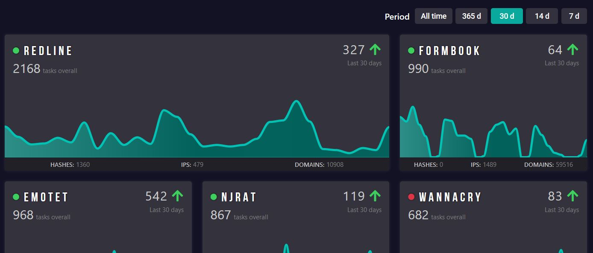
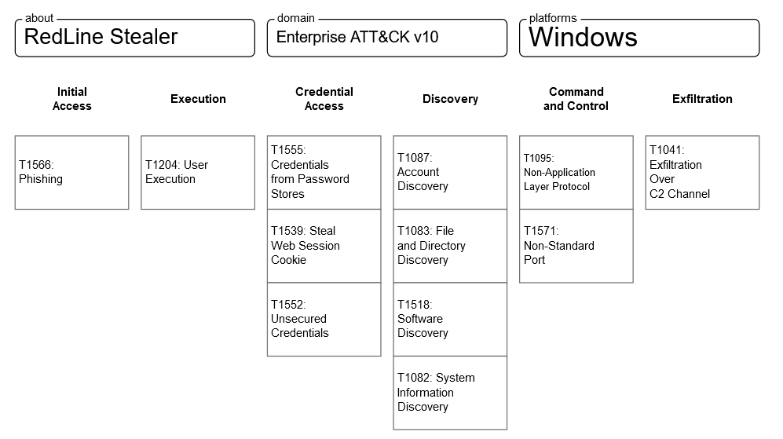

This is my first threat analysis report. I’ve picked the RedLine Stealer because it was gaining popularity in early 2020 and is still being widely spread in Dec 2021 (probably because of its continuous updates). There are already some articles about this malware and a decent amount of IOCs which I linked in the References.
 Figure 1: Redline Trend in any.run
Overview
RedLine Stealer gathers browser credentials, cookies, system information, browser autocomplete information, crypto wallets, etc. from Windows machines. It’s been sold using a subscription-based model making it a Malware-as-a-Service (MaaS).
 Figure 2: RedLine Stealer Official Telegram account (Source: SOCRadar)
Figure 2: RedLine Stealer Official Telegram account (Source: SOCRadar)
Distribution
RedLine hides under different formats including:
- Office
- RAR and ZIP
- Executable files
- JavaScript
It can be sent through different channels: email attachements, discord, malicious ads, cracked games, etc. Knowing that a lot of people are staying at home during the pandemic, it is not surprising to see this malware being sent through email attachements. The infostealer might also be used to drop other malware on the victim’s machine.
Behavior
There was a leaked cracked version of this malware in 2020 sitting in a github repository (at least for now). The repository contains a RedLine.MainPanel.exe.config file, which is the config file of the stealer dashboard in XML format. We notice the following:
- .NETFramework v4.6.2
- Profile Settings (Attacker’s settings): Login, Password, Server IP
- Remote Client Settings (Victim’s settings): Passwords, Cookies, FTP, Files, CreditCards, Autofills
Also there is a batch file with the command: netsh advfirewall firewall add rule name="RLS" dir=in action=allow protocol=TCP localport=6677. This adds a rule to the firewall that enables TCP connections on port 6677.
Looking at some samples in any.run, we see that it tries to grab the victim’s browser and VPN client data:
1
2
3
4
C:\Users\admin\AppData\Local\NordVPN
C:\Users\admin\AppData\Local\Chromium\User Data\
C:\Users\admin\AppData\Local\BraveSoftware\Brave-Browser\User Data\
...
and also stealing cookies:
1
2
3
C:\Users\admin\AppData\Roaming\Mozilla\Firefox\Profiles\qldyz51w.default\cookies.sqlite
C:\Users\admin\AppData\Local\Google\Chrome\User Data\Default\Cookies
...
This infostealer’s activities seem to vary a lot: In some cases RedLine is searching for specific programs on the victim’s machine. I’m guessing there is a RedLine builder with features that can be enabled to fit the malware user.
Now what’s troublesome (but expected) is that RedLine is obfuscated. A de-obfuscated version from the Blackberry Research & Intelligence Team presents several features of this infostealer including reading vpn configuration.
 Figure 3: Reading username and password via NordVPN Config file (Source: Blackberry)
Figure 3: Reading username and password via NordVPN Config file (Source: Blackberry)
It’s also important to note that RedLine tries to steal Instant Messenger credentials like Discord and Telegram but also credentials related to FTP clients (FileZilla and WinSCP) and the Steam client.
 Figure 4: Parsing the Steam Sentry File (.SSFN) to read the users credentials / authorization data (Source: Blackberry)
Figure 4: Parsing the Steam Sentry File (.SSFN) to read the users credentials / authorization data (Source: Blackberry)
Conclusion and MITRE ATT&CK Matrix
RedLine is getting quite popular and is receiving more updates. The 2020 leaked version included fewer features than the samples I have encountered recently. Because of RedLine’s varieties, people should be careful of the files they are downloading on the internet. Unfortunately, the pandemic is making it easier for threat actors to be successful in their phishing campaigns. For a price ranging from 150$ to 800$, they are likely to get a good return on investment especially if they stumble uppon cryptowallets.
 Figure 5: RedLine MITRE ATT&CK Matrix
IOCs
Hashes:
- 88A8CBAC4C313547D13F5265D874776174656ED3A1BCCB9937CD47067B7FE733
- 8C7DE80EB1CB5DCD3A9B180C1EA64E2477BBD992C0BE91768C4AAF66E781ED7B
- 1E899E9715679DACD49BCC56039CA51D3DAD675C5D3525148BC94D1864304178
- 04DD197044B9D4C84A86FB2E50FC3C0C3AC5B021AA1314B821D693FA60124465
- 5975E737584DDF2601C02E5918A79DAD7531DF0E13DCA922F0525F66BEC4B448
- CA7B364E65865734982FD56028549C652FCE04D01E5EDE83CBDE0D65AF38A853
- 13E308B3865991B142C4B3BDED2016148FDA7CF46E5D50CCD95943B0428B07A1
- 13D8CC8A5865B0D100D406358B1F38D1D9722C3B0407278480FB607CDA9C4A61
- 851F5E3FC5AAD87C89AD31AFA6702EFD6D6BC409ADAF0CE3FF0E2D683DECD495
- 662BEB6357002F6E4911A0F5CFAFD4DFF12CD22F92932AE8543429E7CF189D2C
- BCD55CD12D6BFB1207100146D90DE34703387B88FC31C296507A368303D85797
- 9975AECF7AF009672998FE402E33CA1CBA676E24D3BA6D23E5F2E011D0A210EA
- F64EC8BDAAC8B86E522705EA9388EB30BE070520466EF58B5141932F910A9E3E
- 747C067409C614F5F526987561ECFB860D9913432E62FDF2622C61D92E9323DB
- A46877360915A0F6D9FF4A1CE935352E485333CA80A3C82ED83AE72BC92328C7
- 30EA2B66243B336C8C371B34D6588A3C5D08EB5EDA6334342C5164098D900A60
- F98E925C1CCAB5E997E6E4E2349C4A31DCDFABEBBF267D1BBF7943F35F0D4B57
- 0C79CCEAF053CD034C8E6E4AE7BBC590EEB10C4A03C456C04D38AA0357F60E19
- B23D8D32ED04AE5F2C4BE9CF88D08704C692E65756E26D5B31B87E049442D7E0
- 6958D4559B3BAE679946BC9AF076E82C41C1A71644AAB97121DDC6FBBD05E57F
IP addresses:
- 185.82.202.246 (yabynennet.xyz)
- 2.58.149.82
- 5.206.227.27
- 185.215.113.29
- 185.215.113.39
- 94.140.112.131 (jastemyaynha.xyz)
- 172.67.75.172 (api.ip.sb)
- 92.255.85.131
- 23.202.231.167
- 193.150.103.37
- 45.129.99.59
- 3.129.187.220
- 3.142.167.4
- 65.108.69.168
- 159.69.246.184
- 95.143.178.139
- 2.57.90.16
- 99.83.154.118
- 3.142.129.56
- 171.245.160.159
- 3.22.30.40
- 62.182.156.182
- 193.161.193.99
- 62.182.156.181
- 185.255.134.22
- 91.245.226.16
- 45.9.20.52
- 185.215.113.50
Domains:
- yabynennet.xyz
- jastemyaynha.xyz
- api.ip.sb
- neasanckenk.site
- bbardiergim.site
- jangeamele.xyz
- querahinor.xyz
- evaexpand.com
- fevertox.duckdns.org
- 4.tcp.ngrok.io
- joemclean.duckdns.org
- microsoftfixer.duckdns.org
- fevertoxs.duckdns.org
- adenere.duckdns.org
- www.linknhomkin.com
- hungaria-eon.eu
- baninternetfalabellia-digita-linea.click
- isns.net
- krupskaya.com
- m-onetrading-jp.com
- majul.com
- thuocnam.tk
- www.intercourierdelivery.services
- govvv.xyz
- tatreriash.xyz
- nariviqusir.xyz
References
- https://malpedia.caad.fkie.fraunhofer.de/details/win.redline_stealer
- https://cyberint.com/blog/research/redline-stealer/
- https://blog.cyble.com/2021/08/12/a-deep-dive-analysis-of-redline-stealer-malware/
- https://socradar.io/what-is-redline-stealer-and-what-can-you-do-about-it/
- https://any.run/malware-trends/redline
- https://labs.k7computing.com/index.php/redline-stealer-the-maas-info-stealer/
- https://threatfox.abuse.ch/browse/malware/win.redline_stealer/
- https://github.com/rootpencariilmu/Redlinestealer2020
- https://blog.talosintelligence.com/2021/12/magnat-campaigns-use-malvertising-to.html
- https://www.proofpoint.com/us/blog/threat-insight/new-redline-stealer-distributed-using-coronavirus-themed-email-campaign
- https://blogs.blackberry.com/en/2021/07/threat-thursday-redline-infostealer